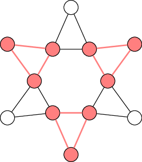
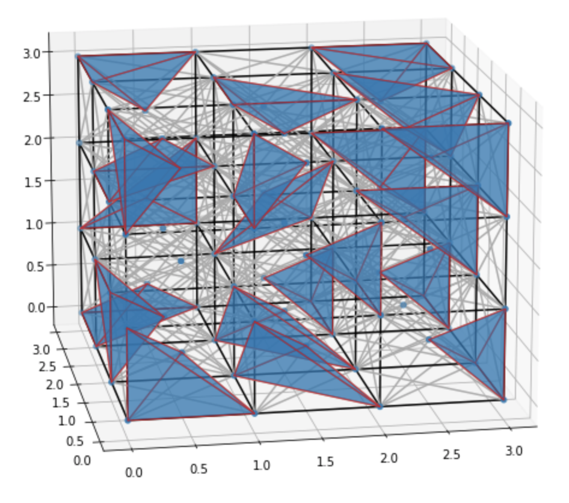

Packing¶
Packing problems on graphs deal with the question of how to identify as many disjoint sub-structures of a given type as possible in a given graph. For example, we could try to find as many pairwise non-connected vertices as possible (maximum independent set) or as many disjoint cliques as possible (clique packing problem).

Example of clique packing for 3-cliques (aka triangles).
Independent set¶
An independet set in the vertex set of a graph is a subset of the vertices in which no pair of vertices is connected by an edge.
Create an ILP for the maximum independet set problem |
|
Get a list of vertices comprising a maximum independent set |
Clique packing¶
A clique is a fully connected subgraph. The clique packing problem asks for the maximal number of vertex disjoint cliques that can be found in a graph.
Create an ILP for the clique packing problem |
|
Get a dictionary of vertex to clique assignments |
Set packing¶
The set packing problem is asking for a maximum weight, disjoint sub-collection of the sets in a set system.
Create an ILP for the weighted set packing problem |
|
Get a list of sets comprising a set packing |
Heuristics¶
The methods in this section provide approximate solutions to the set packing problem constituting admissible solutions from which to start the exact optimisation.
Greedy heuristic for the set packing problem |
Details¶
-
graphilp.packing.max_indset.create_model(G)¶ Create an ILP for the maximum independet set problem
- Parameters
G – an
ILPGraph- Returns
- ILP:
This formulation creates a vertex cover and uses the fact that a maximum independent set consists of the complement of the vertices in a minimum vertex cover.
\begin{align*} \min \sum_{v \in V} x_v\\ \text{s.t.} &&\\ \forall (u, v) \in E: x_u + x_v \geq 1 && \text{(at least one vertex must be in a vertex cover of G)}\\ \end{align*}
-
graphilp.packing.max_indset.extract_solution(G, model)¶ Get a list of vertices comprising a maximum independent set
- Parameters
G – an
ILPGraphmodel – a solved Gurobi model for maximum independent set
- Returns
a list of vertices comprising a maximum independent set
-
graphilp.packing.clique_packing.create_model(G, clique_size)¶ Create an ILP for the clique packing problem
- Parameters
G – an
ILPGraphclique_size – size of the clique to be packed
- Returns
- ILP:
Let \(k\) be the size of the cliques to be packed, \(\overline{E}\) be the complement of the edge set, and \(C = \{0, \ldots, \lfloor |V|/k \rfloor \}\) an index set for the possible cliques packed into \(G\).
The ILP formulation uses the following variables:
\(y_{c}\)
Binary variables indicating whether a clique with index \(c\) is used.
\(a_{cv}\)
Binary variables indicating whether vertex \(v\) is part of the clique with index \(c\).
\begin{align*} \max \sum_{c \in C} y_c\\ \text{s.t.} &&\\ \forall v \in V: \sum_{c \in C} a_{cv} \leq 1 && \text{(each vertex can be in at most one clique)}\\ \forall \{u, v\} \in \overline{E}: \forall c \in C:\\ a_{cu} + a_{cv} \leq 1 && \text{(unconnected vertices cannot be in the same clique)}\\ \forall c \in C: \sum_{v \in V} a_{cv} - k y_c = 0 && \text{(chosen cliques need to have k members)}\\ \forall c \in C: \forall v \in V: y_c - a_{cv} \geq 0 && \text{(cluster with } \geq 1 \text { vertex needs to be chosen as clique)}\\ \end{align*}- Example:
 How many vertex disjoint tetrahedra can you pack in a grid graph?
-
graphilp.packing.clique_packing.extract_solution(G, model)¶ Get a dictionary of vertex to clique assignments
If a vertex is not assigned to a clique, its value in the dictionary is zero.
- Parameters
G – an
ILPGraphmodel – a solved Gurobi model for clique packing
- Returns
a dictionary mapping vertices to cliques
-
graphilp.packing.set_packing.create_model(S, warmstart=[])¶ Create an ILP for the weighted set packing problem
- Parameters
S – a weighted
ILPSetSystemwarmstart – a list of disjoint sets in the set system
- Returns
- ILP:
Let \(M\) be the incidence matrix of the set system, \(w\) the vector of weights associated to the sets of the system, \(x\) a vector indicating which set is selected, and \(1\) a vector of ones.
\begin{align*} \max w^{\top}x\\ \text{s.t.} &&\\ Mx \leq 1 && \text{(each element of the universe is in at most one set)}\\ \end{align*}
-
graphilp.packing.set_packing.extract_solution(S, model)¶ Get a list of sets comprising a set packing
- Parameters
S – a weighted
ILPSetSystemmodel – a solved Gurobi model for weighted set packing
- Returns
a list of sets comprising a set packing
-
graphilp.packing.heuristics.setpacking_greedy.get_heuristic(S)¶ Greedy heuristic for the set packing problem
Iteratively add the set with highest size-to-weight ratio which does not contain an element that is already covered to the solution.
- Parameters
S – a weighted
ILPSetSystem- Returns
a list of disjoint sets of the set system